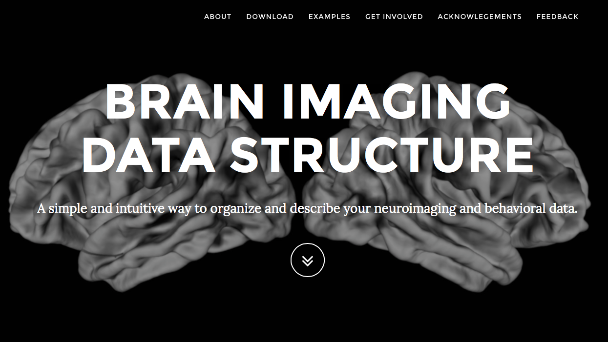
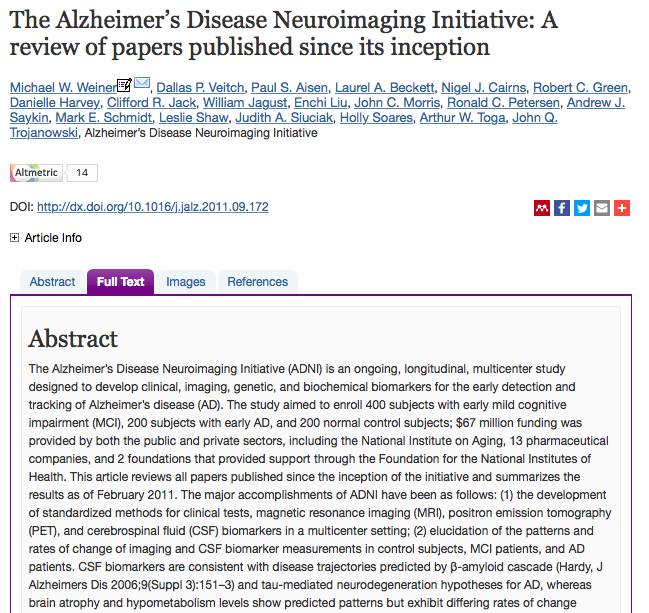
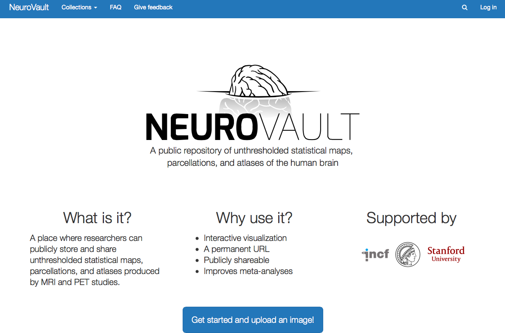
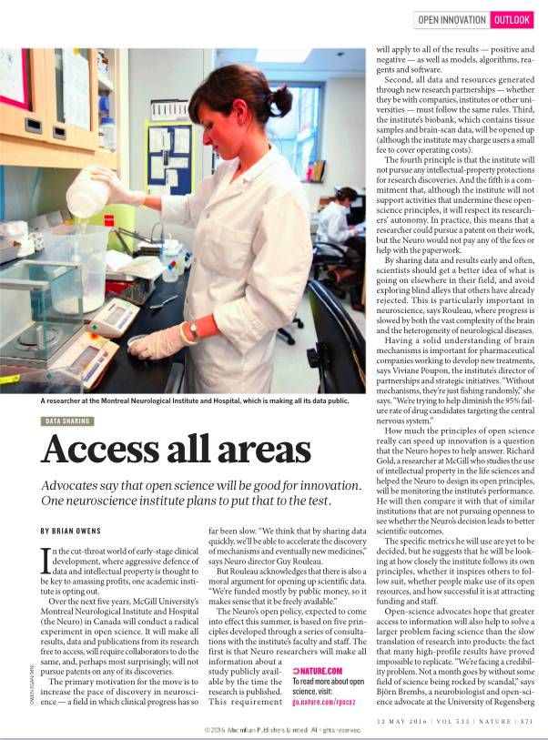
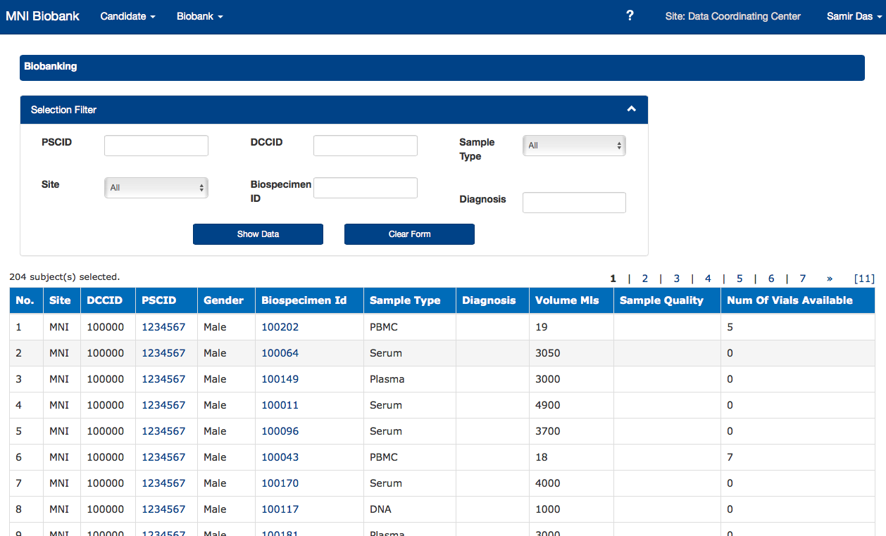
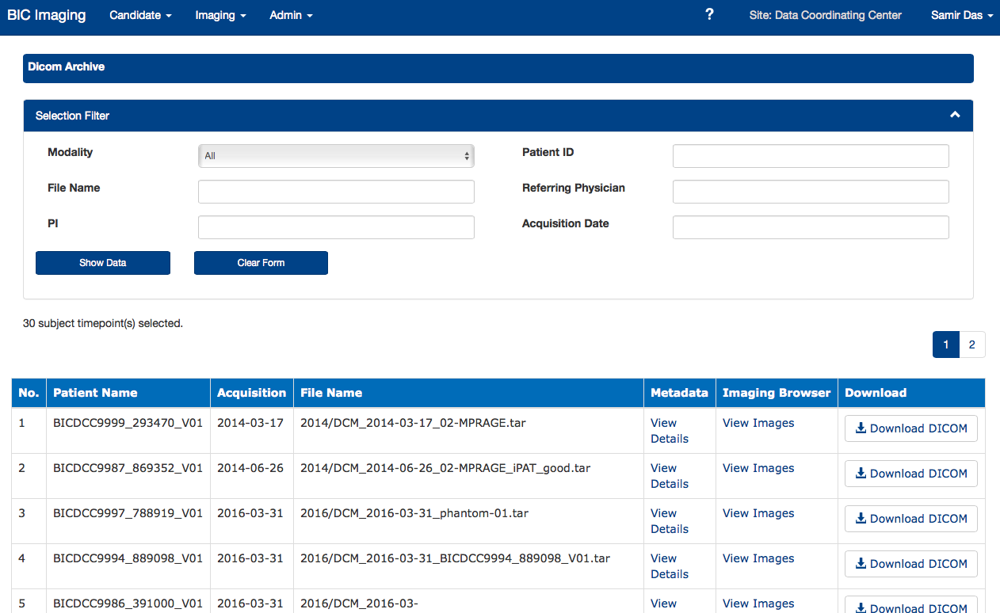
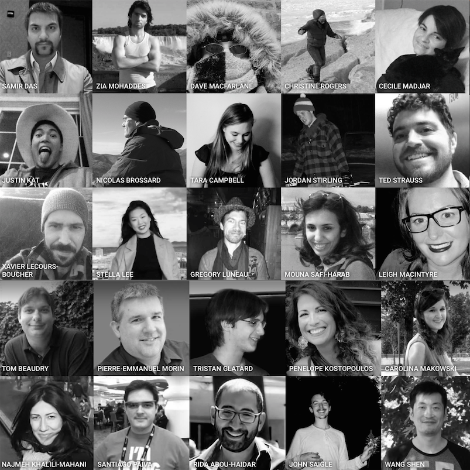

Data Sharing Initiatives
|
Dr. William Feindel May 6, 2016 
|

|

|

|

Today's talk
Disclaimer - MNI-centric solutions
- Data Sharing preamble (hurdles, issues, solutions...)
- Examples of tools, datasets, and environments
- LORIS and CBRAIN
- Open Science at the MNI
What is Data Sharing?
Exchange of information
Datasets
Tools
Standarization
Databases
Collaborations
Conferences, hackathons
Facebook, Google, Twitter, etc.
Image source: http://blog.veritythink.com/post/87880448269/creative-data-sharing-and-open-humanitarianism
Data Sharing Issues
| Benefits | Hurdles |
|---|---|
| It's the future | Fear |
| Reduces waste/duplication | Technical challenges |
| Increased exposure | Privacy concerns |
| Access to larger datasets | Data Harmonization |
| Access to rare data | Interoperability |
| Less attrition | Reproducibility |
| Increased validation | Obtaining ethics |
Best practices in Data Sharing
Committee on Best Practices in Data Analysis and Sharing (COBIDAS)

Some Data Sharing solutions?

External Initiatives
INCF, Open Science Framework, NITRC, Allen Institute, NDAR, Open fMRI, Organization Human Brain Mapping, Human Brain Project, Compute Canada, Maelstrom, UK Biobank, Edinburgh, BRAIN, ENIGMA, Enhanced Nathan Kline Institute (1000 Functional Connectomes), LONI, GAAIN, COINS, XNAT, BrainSpell, SPM, BrainCode, FSL, FSL, FSL,
So many initiatives!
INCF - Los Angeles 2016

|  |
Stuff Why BIDS? |
Consolidated datasets
ADNI, ICBM, NIHPD, Allen Mouse Brain, IBIS, Generation-R, ABIDE, ADHD 200, Human Connectome Project, OMEGA, UK Biobank, Edinburgh Biobank, BigBrain, Talairach, 1000 Functional Connectomes, Colin 27 Atlas, MNI 305 atlas, 1000 Brains, AAL, ANIMAL?? Louis models, Russ Polldrack template, , FSL, FSL, FSL,
ADNI
|  |
|

|

|
|

|

|
Tools and Environments
Neurovault, NeuroSynth, CIVET, VIP, Boutiques, Git-Annex, SOLID, BIDS, NiDM, DiCAT, DCMTK, NiPype, ITK, Freesurfer, SPM, FSL, Mobile MRI, 1000 Brains, AAL, ANIMAL?? Louis models, Russ Polldrack template, , FSL, FSL, FSL,
Neurovault
MNI ecosystem

LORIS globally


|

|
|

|
|
|
|
|
|
Open Source Many tools: CIVET, CivetCombiner, CivetQC, Freesurfer, SPM-batch, NIAK, FSL (bedpostx, bet, fast, feat, first flirt, melodic, probtrackx), many converters, and more... Secure, controlled environment |

|
CBRAIN projects

CBRAIN tasks


Open Science
|  |

|
Value of Open Science to individuals
More citations
Access to larger datasets
Greater exposure
Validation of your data
More collaborations
Increased funding
LORIS Biobank instance
LORIS Imaging instance
Functionality provided with the Open Science Infrastucture
Acquisition and Storage
Raw/processed data is organized and accesible
Long term storage with full backups
Quality Control mechanisms
Surveys emailed to participants
Web image visualization
Tablet Friendly
Anonimyzed automatically
Data linked across modalities
Online Data Querying
Dissemination and Analysis
Centralized data repository
Provenance capture
Cross study correlations
Easy data sharing
Consent is factored in
Completely de-identified
Access to high performance computing
Data flow in Open Science

|  |
Thank you!Acknowledgements: Alan Evans, Alex Zijdenbos, Dario Vins, Jonathan Harlap, Matt Charlet, Andrew Corderey, Sebastian Muehlboeck, Reza Adalat, Penelope Kostopoulos, Louis Collins, Vladimir Fonov, Marc Rousseau, Mia Petkova, Rathi Gnanasekaran, David Brownlee, Tarek Sherif, Pierre Rioux, Nic Kassis, Leigh MacIntyre, Claude Lepage, Ilana Leppert, Carolina Makowski, Natasha Beck, Tristan Glatard, Bert Vincent, Lindsay Lewis, Najma Mahani, Elodie Portales-Casamar, Alden Woodward, Sylvain Milot, Jean Francois Malouin, Sylvain Baillet, Daniel Kroetz, Martin Weiss, Mathieu Desrosier, Jason Karamchandani, Amit Bar-Or, Ted Fon, John Brietner and one of my favourites: Pierre Bellec! LORIS team on left |